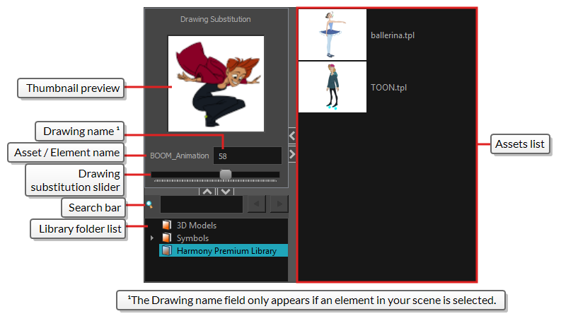
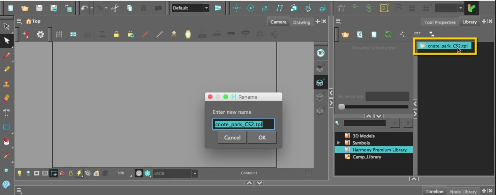
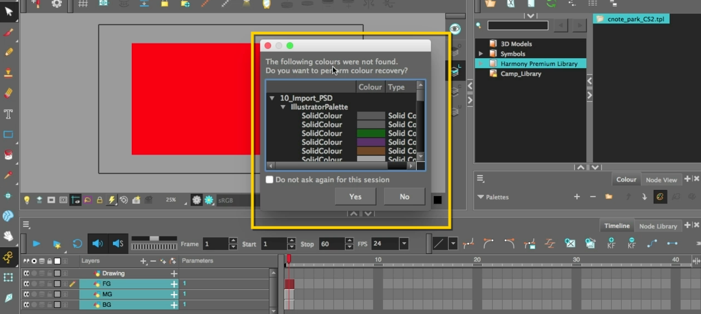
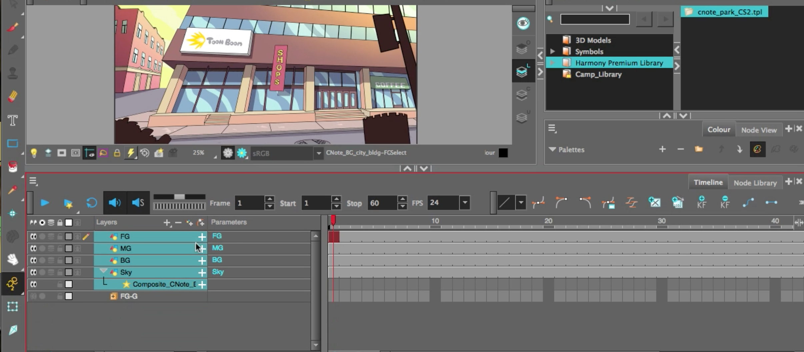

About this Lesson:
This lesson continues where the Importing Images left off. In this lesson you will learn how to setup, import and work with both Adobe Photoshop files and Adobe Illustrator files.
Just a reminder that by default, Harmony works with vector images created within its own interface. Vector images are primarily composed of information about the different shapes composing the images, as well as their line and fill colours. This makes them easy to edit and paint, and allows us to resize them without affecting the image quality. In contrast, bitmap images are composed of colour information about each individual pixel composing the image. Hence, they are more fit for very detailed or realistic pictures, but they cannot be scaled without losing image quality.
Lesson Duration: 1 hour
Topics
Importing Adobe Photoshop PSD files: You can import a multi-layer PSD file into Harmony using the Import Images dialog. When you attempt to import a PSD into a Harmony scene, you will be prompted to choose whether to import your PSD as a single layer or as multiple layers. Please note that your .PSD image file must be set to RGB mode within Adobe Photoshop prior to being imported into Harmony.Importing Adobe Illustrator AI files: You can import AI (Adobe Illustrator) and PDF files into Toon Boom Harmony Premium to convert your files to the Toon Boom format (TVG) and create a colour palette based on the colour settings of the original file. When importing AI and PDF files:
- RGB is supported, CMYK is not.
- Gradients and textures are not supported.
- Only legacy versions of Adobe Illustrator are supported. Exported SWFs, including Actionscript 2 and Actionscript 3, cannot be imported.
- When importing an Illustrator or PDF file in Toon Boom Harmony Premium, by default the file will be imported as separate layers. The import will use the Illustrator file's top level groups as separate layer names.
Harmony Topics:
- Colour Recovery: When Harmony attempts to load a drawing that uses colours from a missing palette, or colours that were removed from their palette, it will display the zones painted with the missing colours in red. Then, it will prompt you to recover the missing colours into a recovery palette. A recovery palette is based on the colour information which Harmony stores in each drawing as a backup mechanism. This palette is stored at the scene level, and is not shared or sourced externally. Whether you choose to perform colour recovery or not, your artwork will preserve the colour IDs which Harmony uses to associate brush strokes, pencil lines and filled zones with the colour swatches in your palettes. Hence, if you recover your original palette, you can just import or link it back to your scene—and remove the recovery palette, if you have one—and Harmony will automatically associate your artwork with the original palette again. You will not have to repaint your drawings.
- Group Selections with Composite: Groups layers to a separate Composite Node.
- Library View: The Library view is used to store elements such as animation, drawings, backgrounds and character models so as to reuse in different scenes and projects. You can also use the Library view to create and store symbols, as well as to store and import images, sound files and 3D models. To reuse elements from a scene in other scenes, you must create a template so that you can import it into different scenes. Templates can contain anything from a single drawing to a whole scene structure. You can create a template by creating it in a scene, then copying the elements you want in your template into a library. The resulting template is structured like a mini-scene that contains only the elements you copied into it. A template does not have any dependencies on the scene it was originally created in. Hence, it can safely be imported in any other scene.

- Library & Templates: Using templates and symbols, you can share and reuse any elements you create in Harmony. The Harmony library lets you store several different elements such as puppets, backgrounds, animations and key poses. In fact, anything you create in Harmony can be stored in the library. The Library view is where you can store and reuse your artwork and animation in other scenes or build props and puppets. The library is a storage center for all production assets; the elements stored in the library are called templates. Although it is mainly used for cut-out animation, the library is also useful for paperless and traditional animation processes. The library can contain any asset used in a Toon Boom Harmony Premium production.
- Light Table: Turns on the light table so you can see Turns on the light table so you can see the previous and subsequent active layers in washed-out colours. It is useful for seeing the other layers when designing, animating or cleaning up your animation.
- Templates & TPL files: When you want to reuse artwork and animation from your project in other scenes, you must create a template. A template can be seen as a portable scene or package that you can drag inside your project. A template is an individual copy of the artwork stored in the library which you can reuse in different scenes. Once a template is stored in the library, you can access it from any project.
- Solo Mode: Solo Mode allows you to instantly and temporarily hide all layers except for the layer or layers you're currently working on. Solo Mode can be enabled on one or several layers, and works with the following logic:
- If Solo Mode is not enabled on any layer, then all enabled layers are visible.
- If Solo Mode is enabled on a single layer, then only this layer is visible and all others are hidden.
- If Solo Mode is enabled on several layers, then only these layers are visible and all others are hidden.
Task:
-
Begin by watching, completing and taking notes on Importing PSD or AI Files video and the topics presented in this lesson.
-
Be sure to save and export your Harmony file as: YourName_inporting PSDAIfiles in your Documents folder. Please submit your animated video using the Submit File section on the bottom of this page. Be sure to continue to take notes in your sketchbook/notebook on how to use Harmony and any animation terminlogy as it will help you prepare for your certification exam at the end of this course.
- Download and unzip the Support Work Files in this lesson. Be sure to Save them to your Documents folder.
- Launch Toon Boom Harmony.
- Be sure to watch the Importing PSD or AI Files video starting at the 0:48 second mark.
- Take notes on how to prepare an Illustrator file for Harmony. Be sure to include the following in your notes:
- Layer structure/set up
- Layer must be setup as RGB
- Gradients and textures
- Expanding
- Saving Illustrator/format/version
Step 2 - Importing into Harmony:
IMPORTANT: In Harmony 24 and later versions, you no longer have to import Illustrator files via the Library view. Simply use the File > Import Vector File... command to achieve this. This will cancel out any Library related instructions shown below, therefore adjust this step according to the Harmony version you are using by omitting the Library requirement.
- In the Welcome Window, create a new scene called: YourName_importing_PSDAIfiles
- Browse and set the location to your Document Folder.
- Keep the Camera Size at the default HDTV_1080p24 1080p (1920 by 1080 pixels and the frame rate is 24 frames per second)
- Click Create Scene.
- Go to the Library View.
- In the Library, find the Harmony Premium Library and right click. Select Right to Modify. This unlocks the library folder so you can import Illustrator files into it.
- Go to File/Import/SWF, Illustrator Files to Library.
Hint: You will not be able to import unless you unlock the Harmony Premium Library
- Select the cnote_park_CS2.ai file from the support files.
- Click open.
- Do not rename the file when the Rename Pop-up window appears.
- Please note that a new template cnote_park_CS2.tpl folder has been added to the Harmony Premium Library.

- Drag the note_park_CS2.tpl folder to the Timeline. Once you release it a Colour Recovery window will open. Harmony is informing you that the colours in the note_park_CS2.tpl do not exist in the current Harmony Palette. Note all the colours from the Illustrator file will be displayed as swatches.
- Click Yes.

- This will add a new note_park_CS2 Palette in the Colour view. All the swatches will be imported into the Colour view.
- Go to the Timeline and select the FG, MG and BG layers.
- Use the Select tool to resize all three layers while holding Option+Shift (macOS) or Alt+Shift (windows) to fit the Camera view.
- Release the cursor and the keys once you are happy with the new size.
- Investigate the different layers in your Timeline by disabling the Visibility icon on the other layers or use the Solo Mode (not in video) to quickly see one layer at a time.
- Delete the original Drawing layer in the Timeline as we will not be using it.
- Select the 3 layers in the Timeline and select Group Selections with Composite. Rename the group to AI-BG.
- Note that the layers will now be collapsed into a new orange square icon with a + icon. Selecting the icon will open and close the group.
- Take a screen shot of your Harmony file showing the following (not in video):
- Timeline:
- AI-BG (expanded) showing:
- BG, MG, FG
- AI-BG (expanded) showing:
- all three layers of the Park in the Camera view
- cnote_park_CS2.tpl folder in the Harmony Premium Library.
- Colour view showing:
- note_park_CS2 Palette in the Colour view.
- Colour swatches in the Colour view.
- Timeline:
- Submit your Harmony AI screenshot at the bottom of this Lesson.
- Be sure to watch the Importing PSD or AI Files video starting at the 6:30 second mark.
- Take notes on how to prepare a Photoshop file for Harmony. Be sure to include the following in your notes:
- Layer structure/set up
- Saving Illustrator/format/version
- Go to File/Import/Images and select the CNote_BG_city_bdg.psd.
- In the Import Images window, select Create Layer(s) Based on Filenames
- In Import Options select Import as Toon Boom Bitmap Drawing. This will allow you to manipulate the image using tools like the eraser. Keep As Original Bitmap restricts you to only resizing and repositioning.
- Keep the Alignment/Rules as Vertical Fit.
- Take note on when and why you would select Vertical Fit versus Horizontal Fit at the 10:40 mark of the video.
- Keep the Alpha at Straight.
- In the Multiple Image Import Settings set Create: to Individual Layers and Transparency as Straight.
- Investigate the different layers in your Timeline by disabling the Visibility icon on the other layers or use the Solo Mode (not in video) to quickly see one layer at a time.
- You should see the following 4 layers: FG, MG, BG, and Sky.

- Select the 4 layers in the Timeline and select Group Selections with Composite (Do not include the Illustrator import group). Rename the group to PSD-BG.
- Go to File/Save or select CMD+S or CTRL+S to save your work
- No need for a Colour Card this time as you have a sky background..
- Take a screenshot of your Harmony file showing the following (not in video):
- Timeline:
- AI-BG (collapsed group)
- PSD-BG (expanded group) showing:
- FG, MG, BG, and Sky.
- all four layers of the City scene visible in the Camera view.
- Timeline:
- Submit your Harmony PSD screenshot at the bottom of this Lesson.